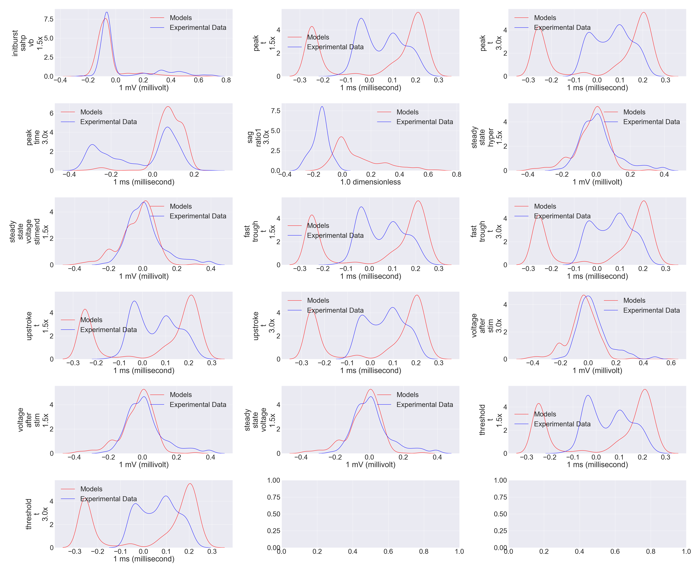

Large Scale Discrimination between Neural Models and Experimental Data
Russell Jarvis 1 *, Sharon Crook 1,2 *, Richard Gerkin 1
1 - Arizona State University, Neuroscience Program, School of Life Sciences, ASU, Phoenix, USA;
2 - Place holder
3 - Place holder
4 - Place holder
* These authors contributed equally
<<<<<<< HEAD
Place holder
- I also used random forest regression to investigate when experimental data inform a classifying statistical model which dimensions explain the most of the observed variance in the feature space. Variance-explained will facilitate the production of a list of improvements to make to our models in order to render models better imitations of real data. In this project you can see use of: PCA, t-Distributed Stochastic Neighbor Embedding (t-SNE). Random Forest Classification (RFC) using 38 features, and also RFC applied to just 2 features (output from PCA). using the RFC "variance-explained" feature. Plotting of a decision boundary. (need to redo). Not done yet, but pending Cross-Validation using looping over many different test/train splits.

Place holder
- Model Optimization and Data pre-processing. We developed techniques to obtain optimized models. Optimized models would act as mimics of experimentally derived data Model governing equation parameters have been more rigorously constrained by a larger volume of experimental data. In order illustrate that the optimized models are better imitations of real data, four adaptive Exponential models, and four Izhikevich models each were fitted to four different classes of experimental cells see implementation in ipython notebook These eight fitted models were subsequently fed into a Druckman feature extraction algorithm, and added as data points in a dimension reduced plot of the feature space. Many pre-existing neural models, and some Allen Brain Data where also plotted as contextual data in the same feature space.
We used TSNE Dimensionality Reduction to examine the separability between in-silico recordings and experimental electrical recordings
.-
If biological neural models were better at imitating
experimental electrical data,
then data and models would not easy to tell apart.
By plotting a 48 dimensional feature space onto a
two dimensional projection space,
I show that a diverse pool of data and models are readily
discriminated via a linear support Vector acting on the dimension reduced space,
a result, that leaves even some of the most optimized models lacking.
Models which are the most resistant to being correctly machine-classified
as models (therefore being misclassified as data), serve as better
imitations/mimics of experimental data.

Project Background
- In the mammal brain one can observe great diversity of electrical phenotypes neurons, all of which differ substantially in their electrical behavior.
- There are a few different classes of general purpose neuronal models,
- that can explain much of the variance different types of electrical behaviours,
- with appropriate parameterizations.
|
|
place holder |
Place holder |
<<<<<<< HEAD ======= >>>>>>> d1c0de820d3deff135ec0725346085492591fd0c |